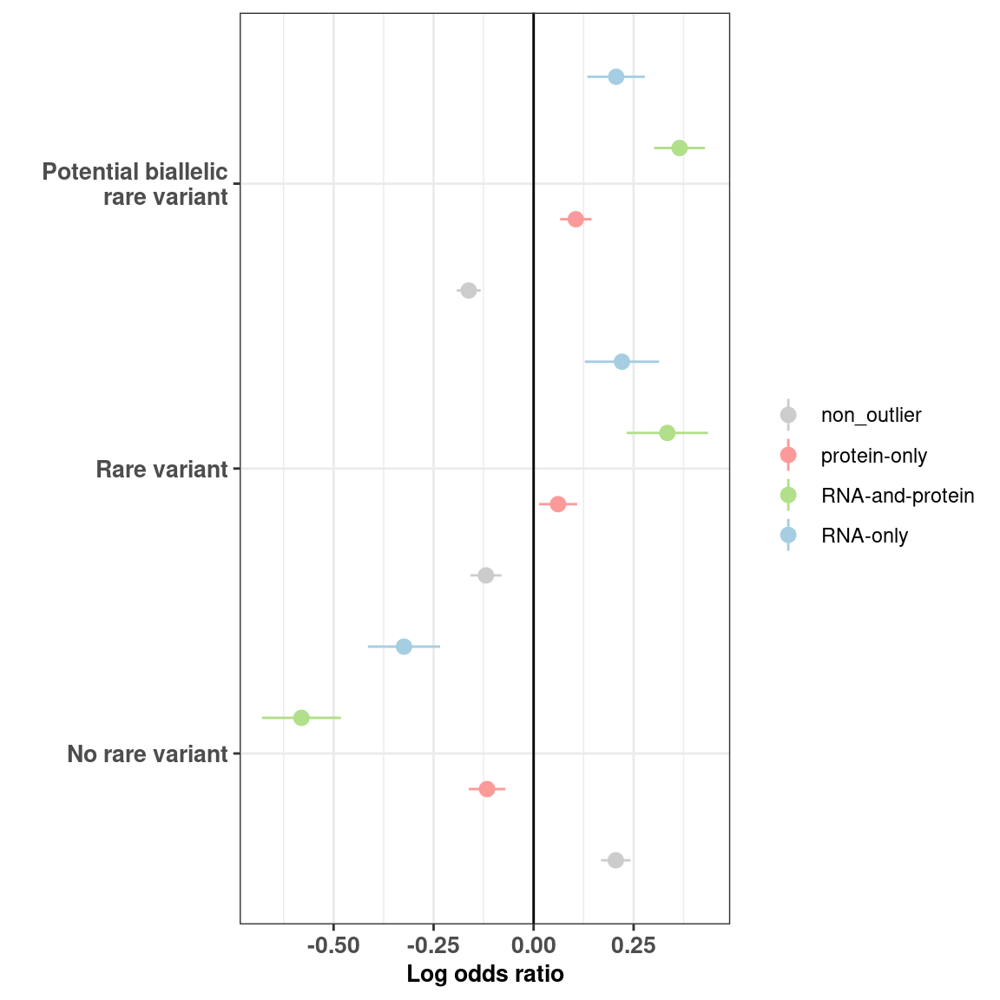

# load config
source(snakemake@input$config)
# Read enrichment results
# enrichments <- fread("/s/project/mitoMultiOmics/multiOMICs_integration/processed_data/variant_tables/enrichment_rare_biallelic.txt")
enrichments <- fread(snakemake@input$enrichment_rare_pb)
nodelist <- levels(enrichments$Cat)
enrichments$Cat <- factor(enrichments$Cat, levels= c("No rare variant", "Rare variant", "Potential biallelic\n rare variant"))
Fig_S2g <- ggplot(data = enrichments, aes(x = Cat, y = Estim)) +
geom_pointrange(aes(x = Cat, ymin = ci_left, ymax = ci_right, colour = outlier_class), position = position_dodge(width = 1)) +
geom_hline(yintercept = 0) +
geom_vline(color = "gray80", linetype = "dashed", xintercept = which(nodelist=="No rare variant")-0.5) +
geom_vline(color = "gray80", linetype = "dashed", xintercept = which(nodelist=="Rare variant")-0.5) +
theme_bw() +
xlab('') +
ylab('Log odds ratio') +
scale_alpha(guide = 'none')+
scale_color_manual(values = outlier_colors)+
coord_flip(ylim = c(min(enrichments[enrichments$Pval <0.05, 'ci_left' ] , na.rm = T),
max(enrichments[enrichments$Pval <0.05, "ci_right" ], na.rm = T)))+
theme(plot.title = element_text(hjust = 0.5),
axis.title.x= element_text( size=10, margin = NULL,face="bold"),
axis.title.y= element_text( size=10, margin = NULL,face="bold"),
axis.text.x = element_text(face="bold", size=10),
axis.text.y = element_text(face="bold", size=10),
legend.title = element_blank())
Fig_S2g

pdf("/s/project/mitoMultiOmics/multiOMICs_integration/Figures/Supplementary_figures/Fig_S2_g.pdf",
width = 6, height =6, useDingbats=FALSE )
print(Fig_S2g)
dev.off()
## png
## 2
IyctLS0KIycgdGl0bGU6IFN1cHBsZW1lbnRhcnkgRmlnIDJnIEVucmljaG1lbnQgb2YgcmFyZSB2YXJpYW50cyBpbiBvdXRsaWVycwojJyBhdXRob3I6IHNtaXJub3ZkCiMnIHdiOgojJyAgaW5wdXQ6IAojJyAgLSBjb25maWc6ICdzcmMvY29uZmlnLlInCiMnICAtIGVucmljaG1lbnRfcmFyZV9wYjogJ2BzbSBjb25maWdbIlBST0NfREFUQSJdICsgIi92YXJpYW50X3RhYmxlcy9lbnJpY2htZW50X3JhcmVfYmlhbGxlbGljLnR4dCJgJwojJyAgb3V0cHV0OgojJyBvdXRwdXQ6IAojJyAgIGh0bWxfZG9jdW1lbnQ6CiMnICAgIGNvZGVfZm9sZGluZzogaGlkZQojJyAgICBjb2RlX2Rvd25sb2FkOiBUUlVFCiMnLS0tCgoKIyBsb2FkIGNvbmZpZwpzb3VyY2Uoc25ha2VtYWtlQGlucHV0JGNvbmZpZykKCiMgUmVhZCBlbnJpY2htZW50IHJlc3VsdHMKIyBlbnJpY2htZW50cyA8LSBmcmVhZCgiL3MvcHJvamVjdC9taXRvTXVsdGlPbWljcy9tdWx0aU9NSUNzX2ludGVncmF0aW9uL3Byb2Nlc3NlZF9kYXRhL3ZhcmlhbnRfdGFibGVzL2VucmljaG1lbnRfcmFyZV9iaWFsbGVsaWMudHh0IikKZW5yaWNobWVudHMgPC0gZnJlYWQoc25ha2VtYWtlQGlucHV0JGVucmljaG1lbnRfcmFyZV9wYikKbm9kZWxpc3QgPC0gbGV2ZWxzKGVucmljaG1lbnRzJENhdCkKZW5yaWNobWVudHMkQ2F0IDwtIGZhY3RvcihlbnJpY2htZW50cyRDYXQsIGxldmVscz0gYygiTm8gcmFyZSB2YXJpYW50IiwgIlJhcmUgdmFyaWFudCIsICJQb3RlbnRpYWwgYmlhbGxlbGljXG4gcmFyZSB2YXJpYW50IikpCgoKCgoKIysgZmlnLndpZHRoPTYsIGZpZy5oZWlnaHQ9NgpGaWdfUzJnIDwtIGdncGxvdChkYXRhID0gZW5yaWNobWVudHMsIGFlcyh4ID0gQ2F0LCB5ID0gRXN0aW0pKSArCiAgZ2VvbV9wb2ludHJhbmdlKGFlcyh4ID0gQ2F0LCB5bWluID0gY2lfbGVmdCwgeW1heCA9IGNpX3JpZ2h0LCBjb2xvdXIgPSBvdXRsaWVyX2NsYXNzKSwgcG9zaXRpb24gPSBwb3NpdGlvbl9kb2RnZSh3aWR0aCA9IDEpKSArCiAgZ2VvbV9obGluZSh5aW50ZXJjZXB0ID0gMCkgKwogIGdlb21fdmxpbmUoY29sb3IgPSAiZ3JheTgwIiwgbGluZXR5cGUgPSAiZGFzaGVkIiwgeGludGVyY2VwdCA9IHdoaWNoKG5vZGVsaXN0PT0iTm8gcmFyZSB2YXJpYW50IiktMC41KSArCiAgZ2VvbV92bGluZShjb2xvciA9ICJncmF5ODAiLCBsaW5ldHlwZSA9ICJkYXNoZWQiLCB4aW50ZXJjZXB0ID0gd2hpY2gobm9kZWxpc3Q9PSJSYXJlIHZhcmlhbnQiKS0wLjUpICsKICB0aGVtZV9idygpICsgCiAgeGxhYignJykgKyAKICB5bGFiKCdMb2cgb2RkcyByYXRpbycpICArIAogIHNjYWxlX2FscGhhKGd1aWRlID0gJ25vbmUnKSsKICBzY2FsZV9jb2xvcl9tYW51YWwodmFsdWVzID0gb3V0bGllcl9jb2xvcnMpKyAKICBjb29yZF9mbGlwKHlsaW0gPSBjKG1pbihlbnJpY2htZW50c1tlbnJpY2htZW50cyRQdmFsIDwwLjA1LCAnY2lfbGVmdCcgXSAsIG5hLnJtID0gVCksICAKICAgICAgICAgICAgICAgICAgICAgIG1heChlbnJpY2htZW50c1tlbnJpY2htZW50cyRQdmFsIDwwLjA1LCAiY2lfcmlnaHQiIF0sIG5hLnJtID0gVCkpKSsKICB0aGVtZShwbG90LnRpdGxlID0gZWxlbWVudF90ZXh0KGhqdXN0ID0gMC41KSwKICAgICAgICBheGlzLnRpdGxlLng9IGVsZW1lbnRfdGV4dCggc2l6ZT0xMCwgbWFyZ2luID0gTlVMTCxmYWNlPSJib2xkIiksCiAgICAgICAgYXhpcy50aXRsZS55PSBlbGVtZW50X3RleHQoIHNpemU9MTAsIG1hcmdpbiA9IE5VTEwsZmFjZT0iYm9sZCIpLAogICAgICAgIGF4aXMudGV4dC54ID0gZWxlbWVudF90ZXh0KGZhY2U9ImJvbGQiLCAgc2l6ZT0xMCksCiAgICAgICAgYXhpcy50ZXh0LnkgPSBlbGVtZW50X3RleHQoZmFjZT0iYm9sZCIsICBzaXplPTEwKSwKICAgICAgICBsZWdlbmQudGl0bGUgPSBlbGVtZW50X2JsYW5rKCkpCgoKIysgZmlnLndpZHRoPTYsIGZpZy5oZWlnaHQ9NgpGaWdfUzJnCgoKcGRmKCIvcy9wcm9qZWN0L21pdG9NdWx0aU9taWNzL211bHRpT01JQ3NfaW50ZWdyYXRpb24vRmlndXJlcy9TdXBwbGVtZW50YXJ5X2ZpZ3VyZXMvRmlnX1MyX2cucGRmIiwgIAogICAgd2lkdGggPSA2LCBoZWlnaHQgPTYsICB1c2VEaW5nYmF0cz1GQUxTRSApCnByaW50KEZpZ19TMmcpIApkZXYub2ZmKCkKCgoKCgo=